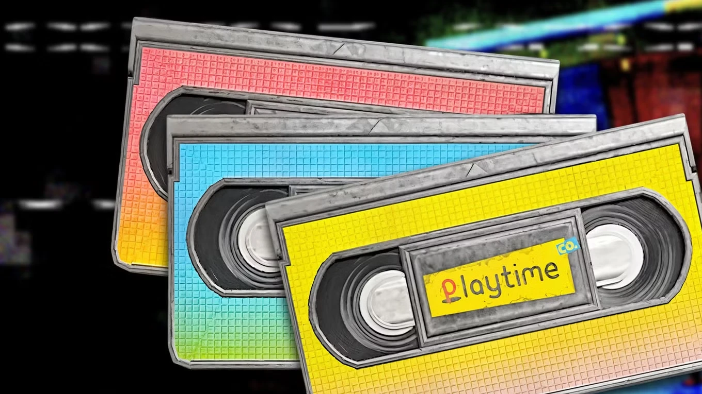
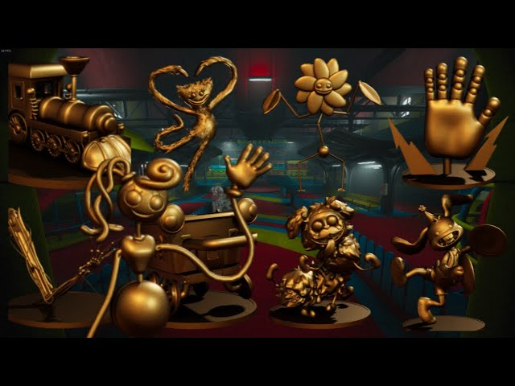
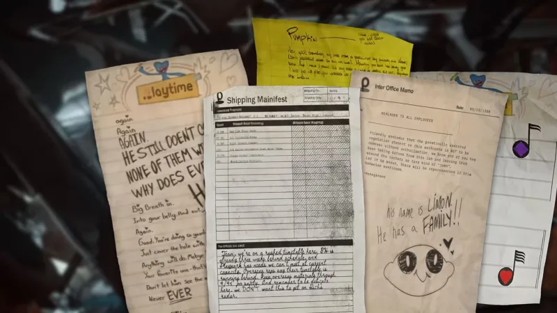

Fitas VHS
Encontradas em salas secretas e laboratórios. Quando inseridas nos videocassetes correspondentes, revelam registros comerciais antigos e gravações confidenciais dos experimentos humanos.

Estátuas de Brinquedo
Pequenas réplicas coloridas dos brinquedos mais famosos da empresa, como Huggy Wuggy e Candy Cat, escondidas em locais de difícil acesso ao longo de todos os capítulos.

Notas e Documentos
Relatórios confidenciais, diários de bordo escritos por funcionários desesperados e avisos internos que ajudam a reconstruir a linha do tempo antes do fechamento da fábrica.